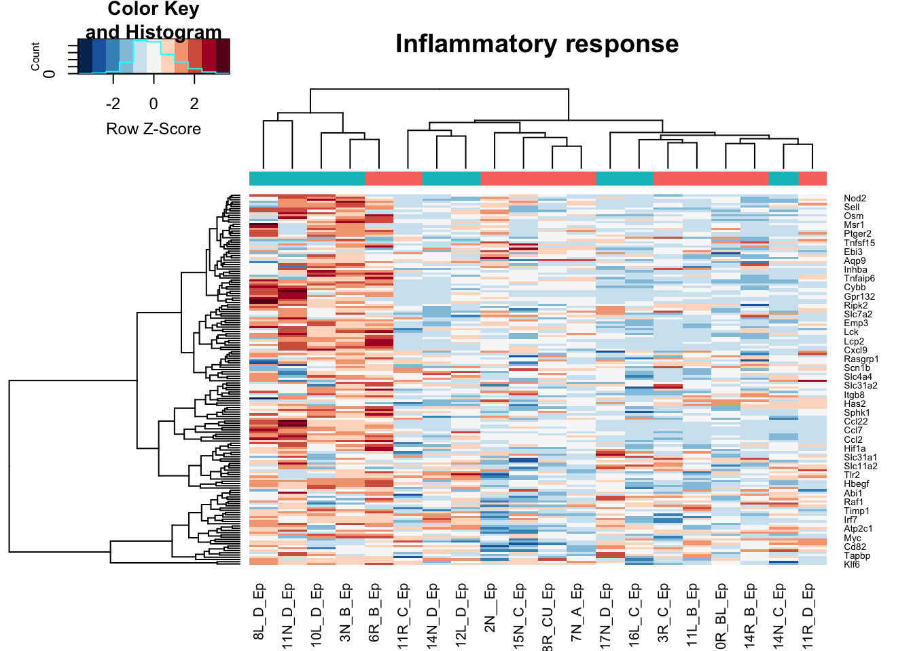
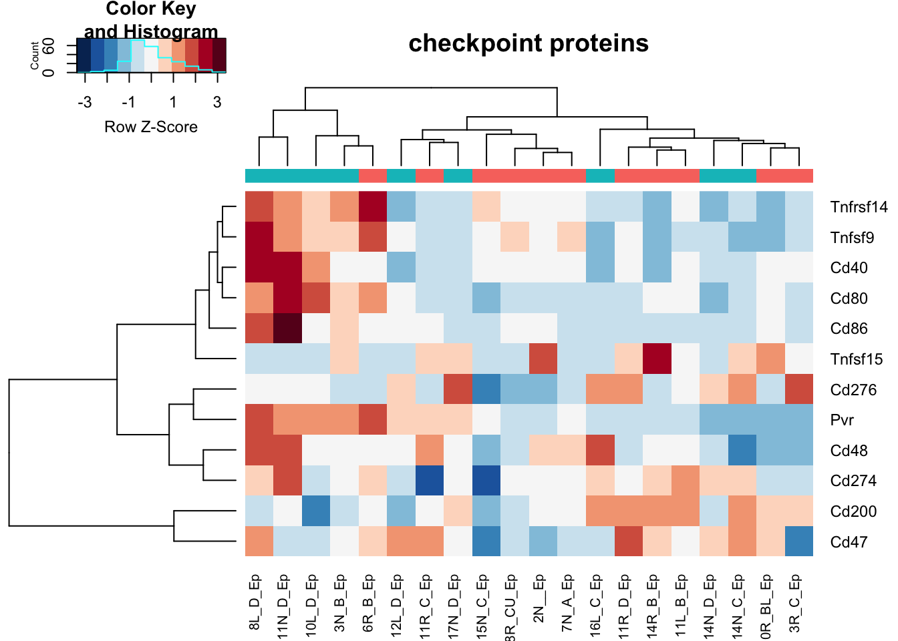
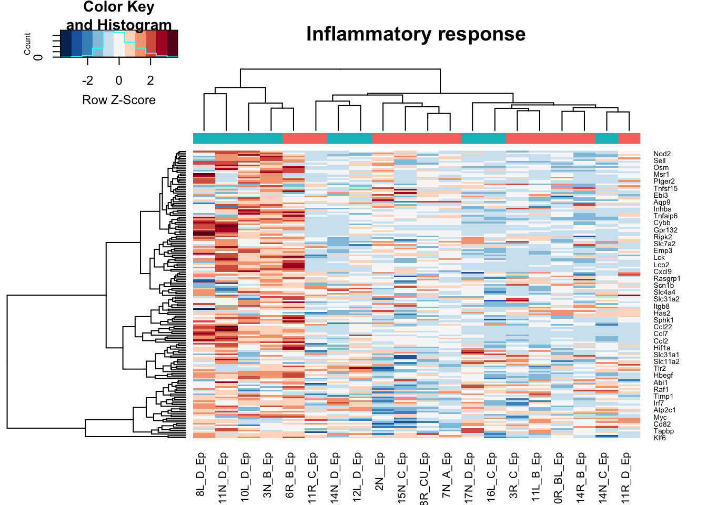
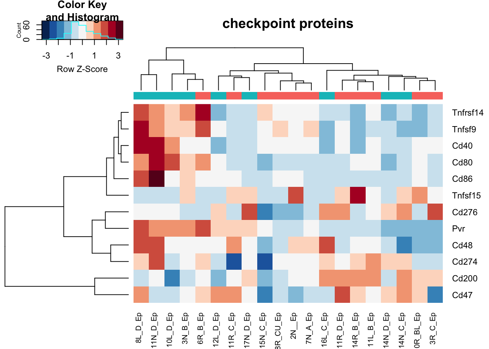
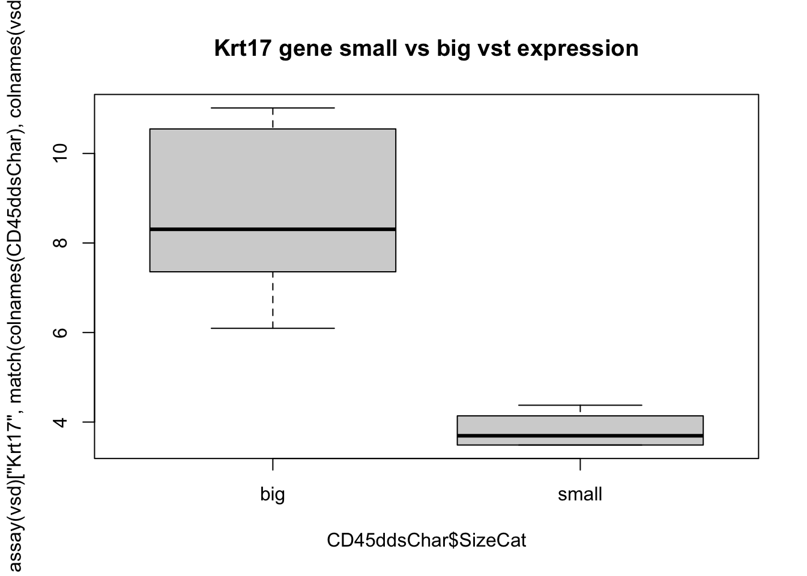
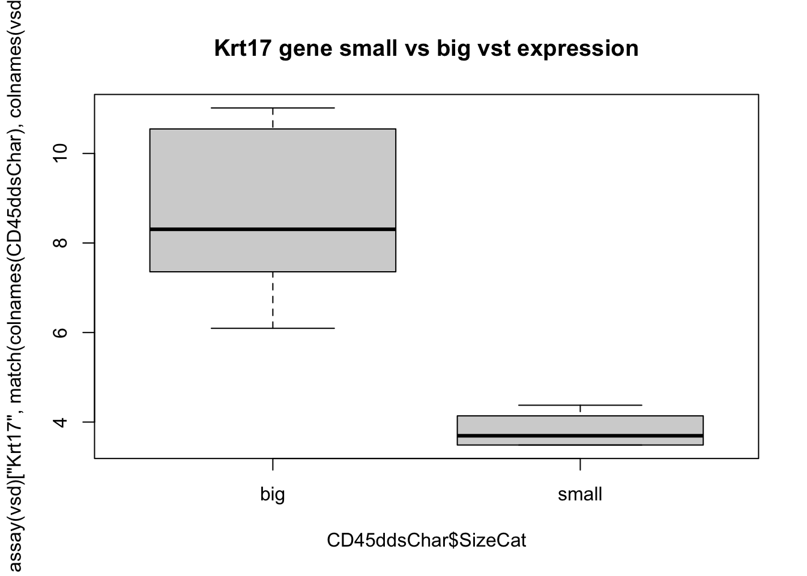
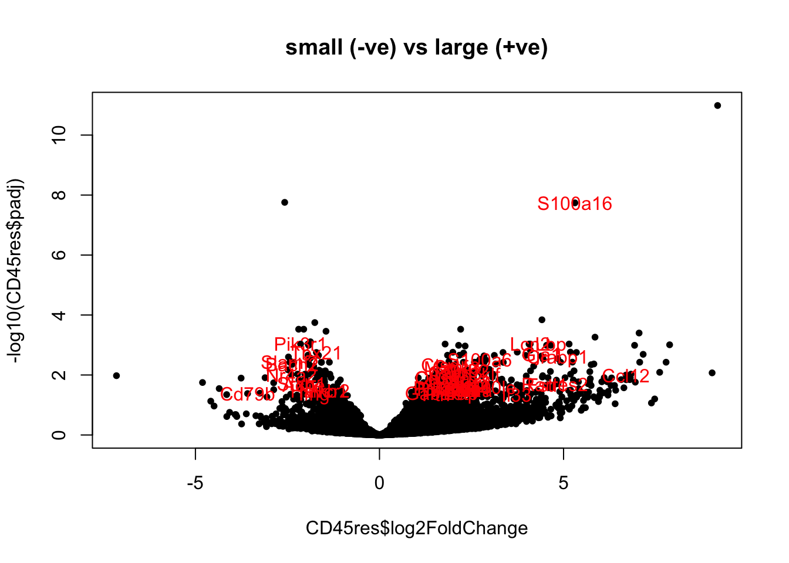
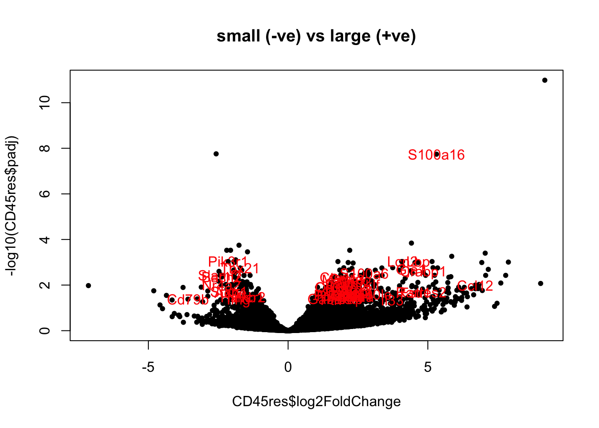

Chapter 9 DESeq analysis
This document sets up DESeq runs to compare:
- CD45 samples
- Ep samples
according to size of the cohort samples
9.1 CD45 samples
In section 6.2, we have noticed that some DN samples had expression of epithelial markers. Here, we perform a differential gene expression analysis to find genes which are different between these two fractions.
Below is a summary of the number of differential genes, using p value cut off of 0.05 and log2 fold change of 1.5 and base expression of 100+.
9.1.1 PCA plot
First, have a look at the samples in a PCA plot: do they separate based on size:


9.1.2 Differential Gene Expression
## [1] "significant differential genes"
 
 
### GSEA

### GSEA
Run GSEA. Here, we will look specifically at the Process Network pathways which are enriched
## -Preprocessing for input gene list and hit list ...
## --Removing genes without values in geneList ...
## --Removing duplicated genes ...
## --Converting annotations ...
## -- 671 genes (out of 11288) could not be mapped to any identifier, and were removed from the data.
## -- 25 genes (out of 330) could not be mapped to any identifier, and were removed from the data.
## --Ordering Gene List decreasingly ...
## -Preprocessing complete!## --183 gene sets don't have >= 5 overlapped genes with universe in gene set collection named c2List!
## --1127 gene sets don't have >= 5 overlapped genes with universe in gene set collection named c5BP!
## --342 gene sets don't have >= 5 overlapped genes with universe in gene set collection named c5MF!
## --154 gene sets don't have >= 5 overlapped genes with universe in gene set collection named c5CC!
## --1 gene sets don't have >= 5 overlapped genes with universe in gene set collection named ProcessNetworks!
## --419 gene sets don't have >= 5 overlapped genes with universe in gene set collection named MetPathway!
## -Performing hypergeometric analysis ...
## -Hypergeometric analysis complete
##
## -Performing gene set enrichment analysis using HTSanalyzeR2...
## --Calculating the permutations ...
## -Gene set enrichment analysis using HTSanalyzeR2 complete
## ==============================================##
## -No of genes in Gene set collections:
## input above min size
## c2List 2199 2016
## c5BP 7530 6403
## c5MF 1663 1321
## c5CC 999 845
## ProcessNetworks 158 157
## MetPathway 1480 1061
## Hallmark 50 50
##
##
## -No of genes in Gene List:
## input valid duplicate removed converted to entrez
## Gene List 11386 11386 11288 10617
##
##
## -No of hits:
## input preprocessed
## Hits 330 305
##
##
## -Parameters for analysis:
## minGeneSetSize pValueCutoff pAdjustMethod
## HyperGeo Test 5 0.05 BH
##
## minGeneSetSize pValueCutoff pAdjustMethod nPermutations exponent
## GSEA 5 0.05 BH 100 1
##
##
## -Significant gene sets (adjusted p-value< 0.05 ):
## c2List c5BP c5MF c5CC ProcessNetworks MetPathway Hallmark
## HyperGeo 10 24 10 16 0 0 3
## GSEA 288 674 203 110 34 147 11
## Both 9 18 10 12 0 0 1
9.2 Epithelial samples
9.2.1 PCA plot
First, have a look at the samples in a PCA plot: do they separate based on size:
 

## [1] "significant differential genes"


9.2.2 GSEA
Run GSEA. Here, we will look specifically at the Process Network pathways which are enriched
## -Preprocessing for input gene list and hit list ...
## --Removing genes without values in geneList ...
## --Removing duplicated genes ...
## --Converting annotations ...
## -- 654 genes (out of 11873) could not be mapped to any identifier, and were removed from the data.
## -- 3 genes (out of 12) could not be mapped to any identifier, and were removed from the data.
## --Ordering Gene List decreasingly ...
## -Preprocessing complete!## --156 gene sets don't have >= 5 overlapped genes with universe in gene set collection named c2List!
## --957 gene sets don't have >= 5 overlapped genes with universe in gene set collection named c5BP!
## --312 gene sets don't have >= 5 overlapped genes with universe in gene set collection named c5MF!
## --132 gene sets don't have >= 5 overlapped genes with universe in gene set collection named c5CC!
## --403 gene sets don't have >= 5 overlapped genes with universe in gene set collection named MetPathway!
## -Performing hypergeometric analysis ...
## -Hypergeometric analysis complete
##
## -Performing gene set enrichment analysis using HTSanalyzeR2...
## --Calculating the permutations ...
## -Gene set enrichment analysis using HTSanalyzeR2 complete
## ==============================================##
## -No of genes in Gene set collections:
## input above min size
## c2List 2199 2043
## c5BP 7530 6573
## c5MF 1663 1351
## c5CC 999 867
## ProcessNetworks 158 158
## MetPathway 1480 1077
## Hallmark 50 50
##
##
## -No of genes in Gene List:
## input valid duplicate removed converted to entrez
## Gene List 11956 11956 11873 11219
##
##
## -No of hits:
## input preprocessed
## Hits 12 9
##
##
## -Parameters for analysis:
## minGeneSetSize pValueCutoff pAdjustMethod
## HyperGeo Test 5 0.05 BH
##
## minGeneSetSize pValueCutoff pAdjustMethod nPermutations exponent
## GSEA 5 0.05 BH 100 1
##
##
## -Significant gene sets (adjusted p-value< 0.05 ):
## c2List c5BP c5MF c5CC ProcessNetworks MetPathway Hallmark
## HyperGeo 0 0 0 0 0 0 0
## GSEA 254 784 173 107 43 77 12
## Both 0 0 0 0 0 0 0